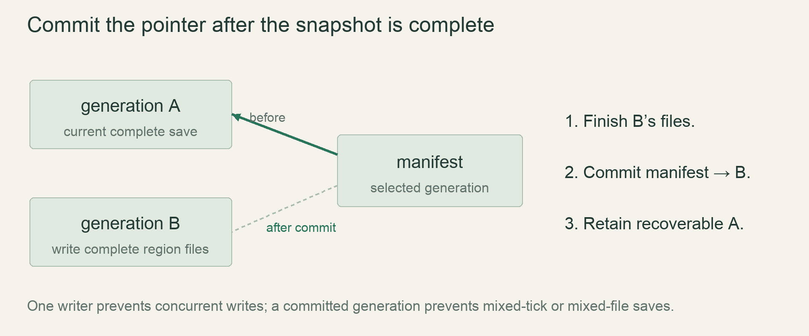

M4 / A persistent worldLesson 76 of 100 · ~5 min reading + build time
Snapshot a running world without changing it
Capture one coherent world state while leaving the live particles and chunks unchanged.
Previously: Group and compress bounded region files. Keep that working result available before starting this lesson.
Why we need this now
An autosave during a blast should not freeze debris in midair by returning it to grid cells. Saving asks what the world was at one tick, not how to modify the world into a shape that is convenient to serialize.
Your result: Capture one coherent world state while leaving the live particles and chunks unchanged.

01Define a snapshot boundary
Imagine grain A moving from chunk 0 to chunk 1. Copy chunk 0 before the move and chunk 1 after it: the snapshot contains A twice. Copy in the opposite order and A disappears. Each chunk may be individually valid while the assembled save is wrong.
Choose a completed simulation tick as the logical boundary. Capture all needed values from that boundary before the next mutation can invalidate the view. For a first correct version, pause mutation briefly while cloning state into an owned snapshot. Measure the copy cost before optimizing with immutable pages or copy-on-write.
02Inventory state by its ability to affect the future
Chunks alone do not define the next tick. Include seed, generator/format versions, step/calendar counters, surface metadata, weather deltas, cooldowns and falling groups. Particle position, velocity and material payload also matter if loading should continue the same blast.
The current spec’s reinsertion-before-save rule deliberately mutates the live world. Treat changing it to particle serialization as a proposal requiring the corresponding spec update, not a silent compatibility fix. A saved snapshot can be coherent under either explicitly approved policy, but the two have different gameplay outcomes.
03Transfer the copy, not the live borrow
A writer job should own its snapshot after capture. Then the game can continue while a single writer encodes and writes the captured generation. The writer must not borrow a mutable World that the next frame also wants to update. Ownership is the practical boundary between simulation and I/O.
Cloning a large world every five minutes is not automatically cheap enough. Clone the changed/relevant state rather than every regenerated chunk, bound concurrent snapshots, and coalesce obsolete autosaves if the writer cannot keep up. A slow disk must not produce an unlimited queue of entire worlds.
04Distinguish exact continuation from exact timing
The experiment clones grid and particles together. Moving the original afterwards cannot alter the captured values. In production save the agreed scheduler residual state if exact scheduling continuation is part of the contract; otherwise document resetting it. A restored world hash can match while wall-clock timing still restarts differently.
Test a mid-transfer chunk fixture and a mid-explosion fixture. Save, continue, restore into a separate world, and compare the complete state inventory. Only then compare subsequent updates under the same injected inputs and tick multipliers.
Read → predict → run → change
Walk through the working example
Complete focused experiment — save as examples/lesson_076.rs, then run cargo run --example lesson_076 from game/.
Download this worked example ↧
#[derive(Clone, Debug, PartialEq)]
struct Particle { x: i32, velocity_x: i32, material: u8 }
#[derive(Clone, Debug, PartialEq)]
struct Snapshot { step: u64, cells: Vec<u8>, particles: Vec<Particle> }
fn main() {
let mut live=Snapshot { step: 10, cells: vec![0,2,0],
particles: vec![Particle{x:4,velocity_x:3,material:2}] };
let captured=live.clone();
live.step+=1;
live.cells.swap(1,2);
live.particles[0].x+=live.particles[0].velocity_x;
assert_eq!(captured.step,10);
assert_eq!(captured.cells,vec![0,2,0]);
assert_eq!(captured.particles[0].x,4);
assert_eq!(live.particles[0].x,7);
println!("snapshot retained tick 10; live world advanced");
}Read what each part does
- The snapshot has independent owned vectors because Clone clones each Vec element.
- Capture occurs before any next-tick mutation in this experiment. A background writer must receive the captured owned value.
- Fixed-point particle coordinates keep this experiment tiny; production particles may use the agreed floating-point representation.
Expected result
snapshot retained tick 10; live world advancedExact version numbers, paths and compiler wording may differ. Compare the behavior and file locations, not incidental output formatting.
Try the idea here
This is a bounded teaching model in your browser, not your Rust game and not a real terminal. It never executes shell commands or modifies project files.
Prediction · repair · transfer
Exercises you actually do
Write a prediction or make an attempt before opening a solution. Use the hint if stuck; then compare reasoning and verify with the stated check. A different implementation is fine when it satisfies the same contract.
Find a missing field
Remove particle velocity from serialization but keep its position. What diverges after load?
Need a hint?
Compare the next update, not only the screenshot at load.
Worked solution
The loaded particle begins in the correct place but follows a different trajectory because its future displacement is missing. Save the full agreed particle state or explicitly change the continuation contract.
How to verify your result
A one-tick continuation test detects the omission.
Construct the double-count bug
Copy the source chunk before a crossing and the destination after it.
Need a hint?
Count the same material ID in both copies.
Worked solution
Both copies contain the transferring grain. A tick-boundary snapshot must capture either the before pair or the after pair, never a mixture.
How to verify your result
A count assertion fails for the mixed snapshot.
Bound autosave memory
The disk takes longer than the autosave interval. How should pending snapshots behave?
Need a hint?
More background jobs do not make the disk faster.
Worked solution
Keep one active write and a bounded pending/latest snapshot policy. Preserve an explicit manual-save request if required. Measure snapshot-copy peak memory as well as resident chunk cache memory.
How to verify your result
Stress the writer queue and confirm memory stays bounded.
When it goes wrong
Start with the observed symptom. Change one assumption at a time instead of pasting fixes until the error disappears.
Autosave changes explosions
What is happening: Particles are reinserted into the live grid to simplify saving.
Try this: Choose and document a full-state particle snapshot policy or explicitly accept reinsertion behavior.
World hash differs after load
What is happening: A future-affecting field or cross-chunk transfer was omitted.
Try this: Compare the complete saved-state inventory at one tick boundary.
Memory spikes during slow disk writes
What is happening: Multiple full snapshots are queued.
Try this: Bound active/pending snapshot ownership and coalesce obsolete autosaves.
Explain it without the example
Why can serializing chunks one by one while simulation continues create a broken snapshot?
Reasoning to compare
Different chunks may represent different ticks or transfer states. A coherent boundary prevents duplicated or missing cross-chunk material.
Self-check only: test a prediction or ask your tutor if anything still feels arbitrary.
Finish with evidence
The snapshot represents one coherent tick. Any save-induced world mutation is explicitly accepted or removed by the approved policy.
Make one small variation without copying: predict it, run it and explain any difference. On another day, repeat one exercise from memory before starting the next lesson. Ask your tutor about any step you can execute but cannot explain.
This is an attempt marker, not a grade. Learning records are written only after demonstrated understanding.
Primary sources for this lesson
Use sources to verify the mechanism. The lesson itself supplies the instructions; the links are not a substitute for teaching them.